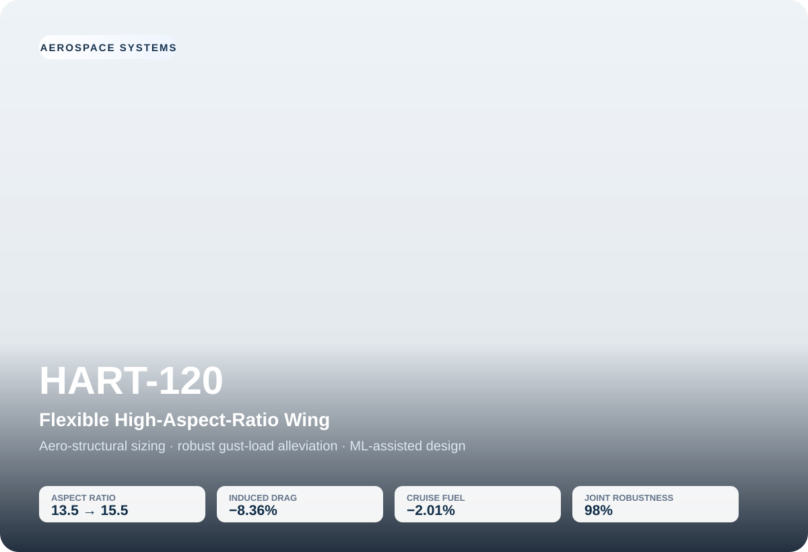
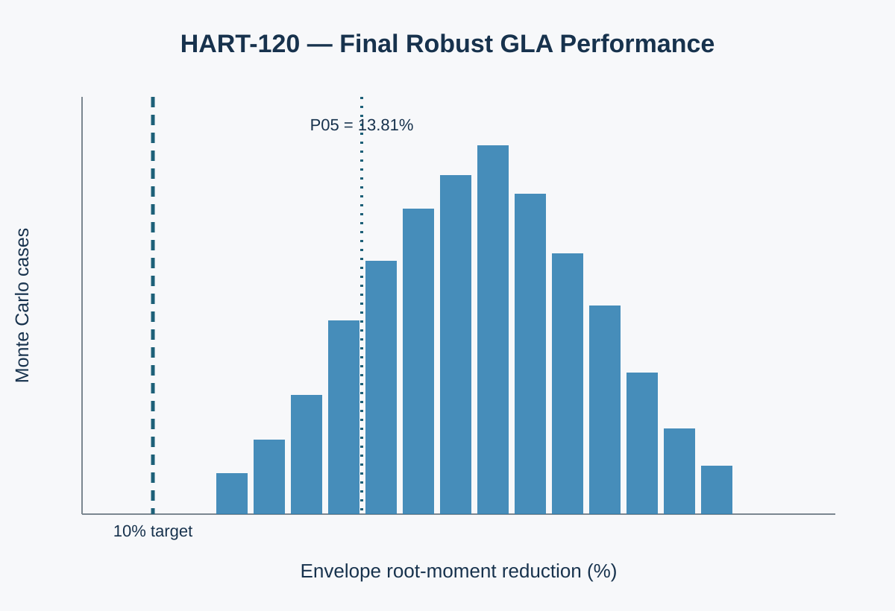

HART-120
Flexible High-Aspect-Ratio Wing & Robust Gust-Load Alleviation
An original fictional transport-wing study built to answer a real aerospace design question: how far can higher aspect ratio improve efficiency before structural mass, flexibility and gust/maneuver loads erase the benefit — and can passive aeroelastic tailoring plus active load alleviation recover useful design space?

From aspect ratio to system closure.
The study deliberately expanded whenever a new physical constraint threatened the apparent aerodynamic benefit. That progression is the engineering story.
AR 15.5 survives the full conceptual trade.
| Metric | Baseline / limit | Final result |
|---|---|---|
| Aspect ratio | 13.5 | 15.5 |
| Span | 39.13 m | 41.93 m |
| Aircraft mass | 55,000 kg | 56,416.5 kg |
| Structure + control package | 6,242.85 kg budget | 6,218.69 kg |
| Induced drag | Reference | −8.36% |
| Total cruise drag | Reference | −2.28% |
| L/D | 18.91 | 19.85 (+4.97%) |
| 3000-km cruise fuel | 6,234.17 kg | 6,109.06 kg (−2.01%) |
| Joint robustness | ≥95% | 98% |
| P95 controlled root moment | ≤3.729 MN·m | 3.687 MN·m |
| Maximum actuator deflection | ≤15° | 13.89° |
The project did not hide the bad answers.
Nominal structure failed under degraded control.
Spar-cap stress remained acceptable, but web shear utilization exceeded unity as maneuver-load-alleviation capability was reduced. The web was resized for the full-control-failure case, adding 59.66 kg.
The first “robust” controller was not robust enough.
A nominal physics-verified controller achieved only 57% pass rate against the fixed controlled-load target under the first Monte Carlo study. The criterion was corrected to compare paired controlled and uncontrolled gust envelopes, and the controller architecture was redesigned around preview time and processing delay.
Final redesign.
The selected controller uses 0.070 s preview and 0.040 s sensor/processing delay, giving 0.030 s effective lead and approximately 15.69 m equivalent forward sensing distance at cruise.
Physics trade + robustness closure.
Two plots summarize the project’s final engineering decision.
Higher AR reduces induced drag but rapidly increases simplified structural mass. Load alleviation moves the +30% mass-budget boundary from conventional AR 15.0 to technology-enabled AR 15.5.

The final Monte Carlo distribution remains above the 10% relative envelope-GLA target at the 5th percentile.
Screen fast. Verify with physics.
The ML layer was introduced only after the engineering model existed. Physics-generated datasets were used to train surrogates for structural, aerodynamic, mission and dynamic GLA outputs.
ML screened large controller/design spaces, but shortlisted architectures were returned to the transient model. Two of the top 15 ML-screened controllers failed the full-physics target — reinforcing the verification workflow rather than being removed from the story.
Selected surrogate performance: fail-safe wingbox mass R² ≈ 0.997; cruise fuel R² ≈ 0.998; fuel-saving percentage R² ≈ 0.988; controlled dynamic root moment R² ≈ 0.960.
What the model does not prove.
HART-120 is a reduced-order conceptual design study. It does not establish certification compliance, flutter clearance, real OEM loads, detailed composite laminate sizing, 3D transonic aerodynamic behaviour, actuator thermal/reliability qualification, certified flight-control laws or complete aircraft economics.
The value is the decision chain: define a system problem, expose the trade, discover failure modes, redesign, quantify the remaining benefit, use ML where it saves computation, and return final decisions to the physics model.